Biography
I am a Ph.D. student at The University of Hong Kong, supervised by Prof. Xihui Liu.
Before that, I got my bachelor's degree in the CS Department at Harbin Institute of Technology in 2023, supervised by Prof. Wangmeng Zuo.
My research interests include but not limited to: 1. 3D Generation; 2. 3D Representation and Perception; 3. Combination of 3D Generation and Robotics. Please feel free to reach out to me via email for discussion or any opportunities. :)
Publications
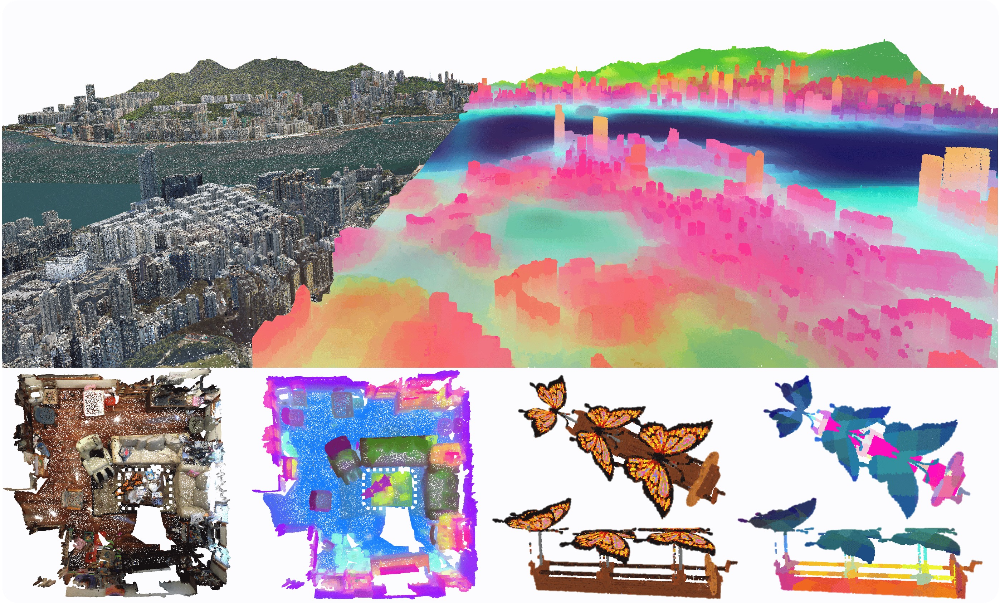
Utonia: Toward One Encoder for All Point Clouds
Yujia Zhang, Xiaoyang Wu, Yunhan Yang, Xianzhe Fan, Han Li, Yuechen Zhang, Zehao Huang, Naiyan Wang, Hengshuang Zhao
Arxiv, 2026
[Paper][Code][Project] [Interactive Demo] 
OmniPart: Part-Aware 3D Generation with Semantic Decoupling and Structural Cohesion
Yunhan Yang*, Yufan Zhou*, Yuan-Chen Guo, Zi-Xin Zou, Yukun Huang, Ying-Tian Liu, Hao Xu, Ding Liang, Yan-Pei Cao, Xihui Liu
SIGGRAPH Asia, 2025
[Paper][Code][Project] [Interactive Demo] 
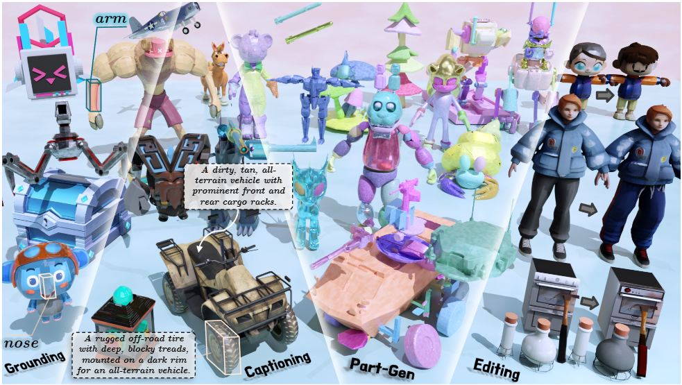
Part-X-MLLM: Part-aware 3D Multimodal Large Language Model
Chunshi Wang*, Junliang Ye*, Yunhan Yang*, Yang Li, Zizhuo Lin, Jun Zhu, Zhuo Chen, Yawei Luo, Chunchao Guo
ICLR, 2026
[Paper][Code][Project] [Interactive Demo] 
HoloPart: Generative 3D Part Amodal Segmentation
Yunhan Yang, Yuan-Chen Guo, Yukun Huang, Zi-Xin Zou, Zhipeng Yu, Yangguang Li, Yan-Pei Cao, Xihui Liu
ICLR, 2026
[Paper][Code][Project] [Interactive Demo] 
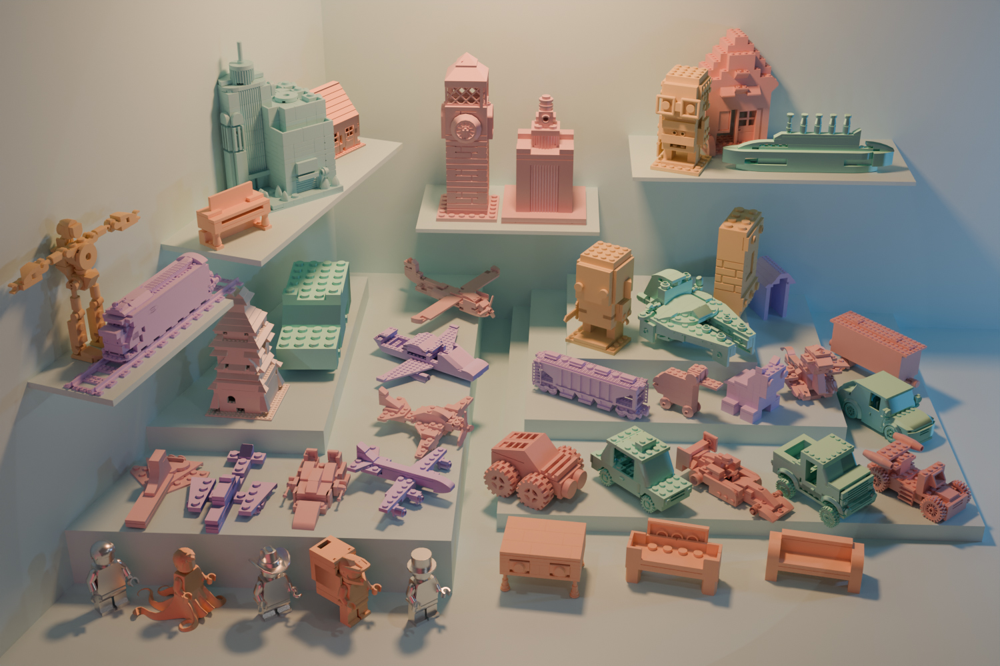
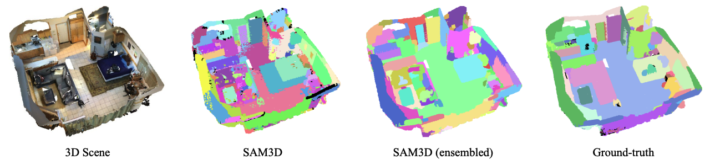

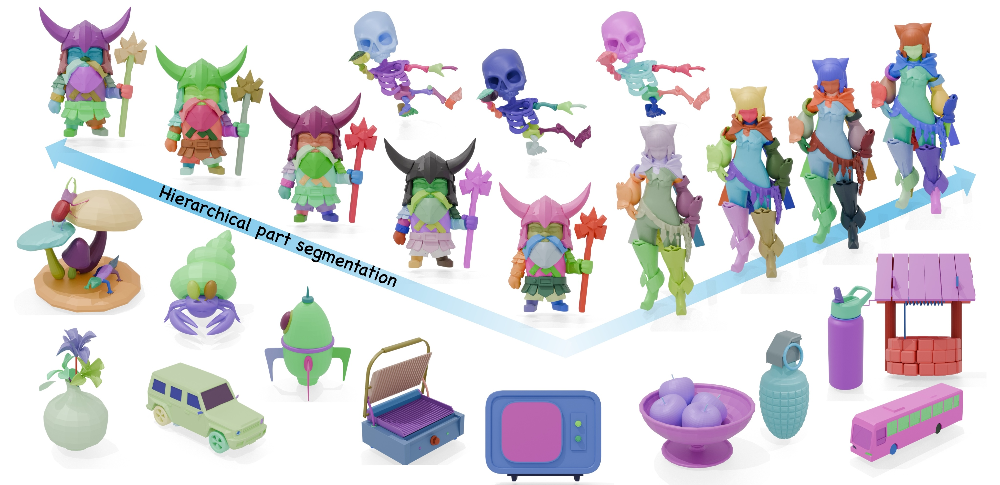
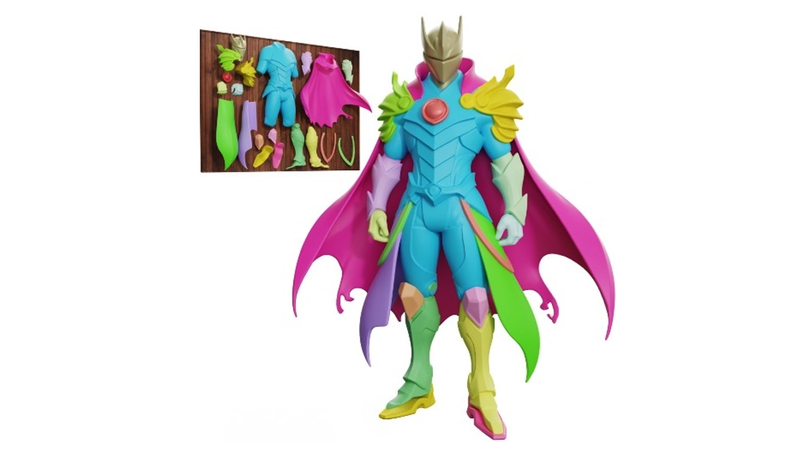

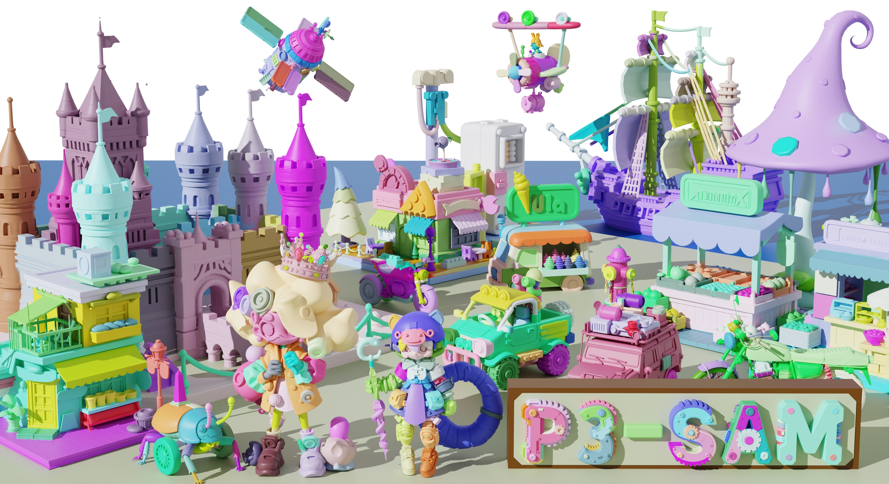
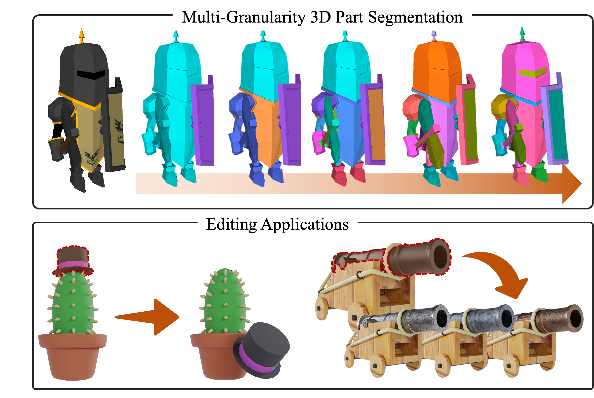

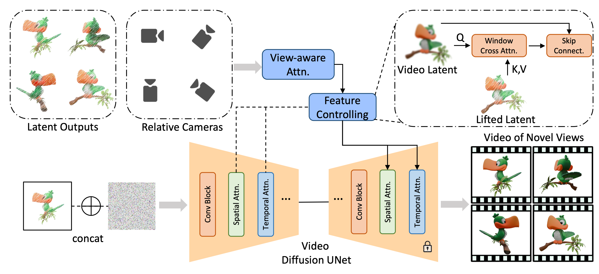
DreamComposer++: Empowering Diffusion Models with Multi-View Conditions for 3D Content Generation
Yunhan Yang*, Shuo Chen*, Yukun Huang*, Xiaoyang Wu, Yuan-Chen Guo, Edmund Y. Lam, Hengshuang Zhao, Tong He, Xihui Liu
TPAMI, 2025
[Paper]

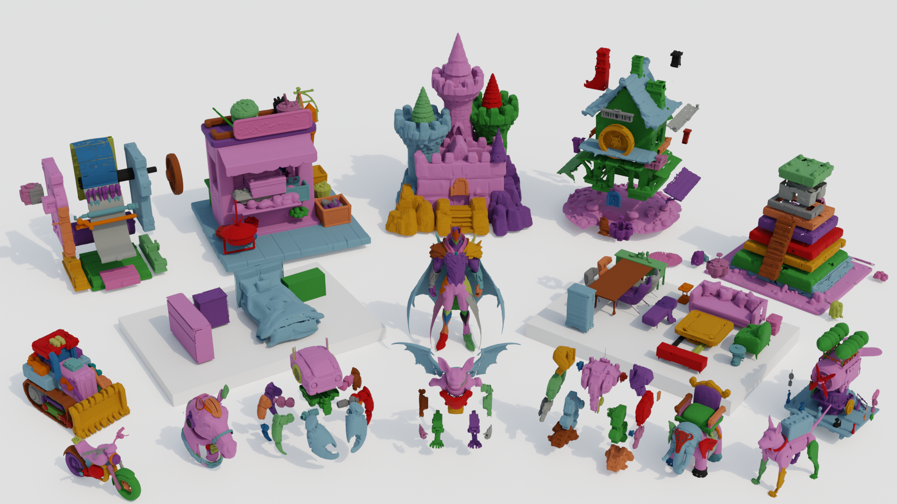


MIDI: Multi-Instance Diffusion for Single Image to 3D Scene Generation
Zehuan Huang, Yuan-Chen Guo, Xingqiao An, Yunhan Yang, Yangguang Li, Zi-Xin Zou, Ding Liang, Xihui Liu, Yan-Pei Cao, Lu Sheng
CVPR, 2025
[Paper][Code][Project] [Interactive Demo] 

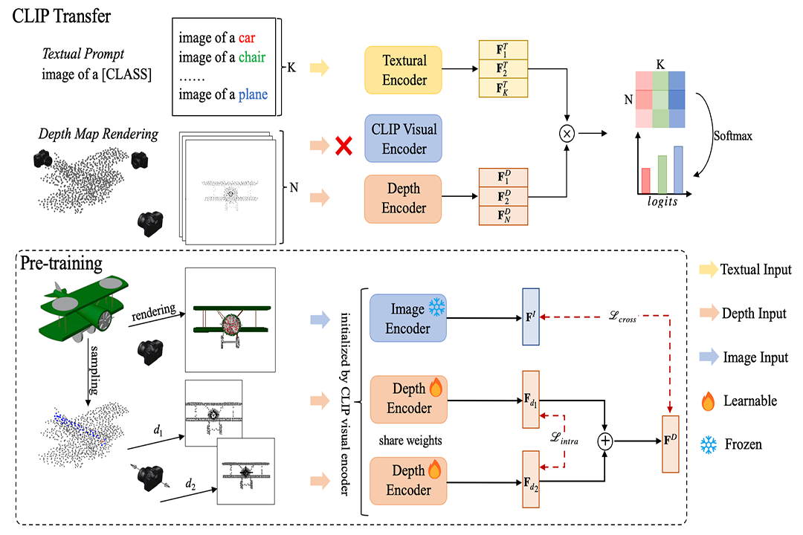

Projects
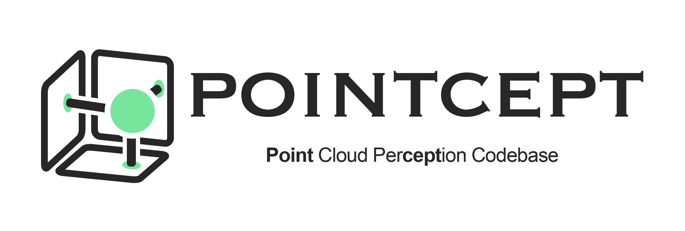
Pointcept: A Codebase for Point Cloud Perception Research
Pointcept Contributors
[Code]

Experiences
- Ph.D. Student,
The University of Hong Kong
2023 - 2027 (Expected) - Research Intern,
Tencent Hunyuan,
2025 - Present - Research Intern,
VAST-AI,
2024 - 2025 - Research Intern,
Shanghai AI Laboratory,
2022 - 2023 - Exchange Student,
KTH Royal Institute of Technology
2022 - 2023 - Bachelor Degree in Computer Science,
Harbin Institute of Technology
2019 - 2023
Awards
- Outstanding Graduate of Heilongjiang Province, China, 2023
- Outstanding Graduate of Harbin Institute of Technology, 2023
- Shenzhen Stock Exchange Scholarship, 2021
- National Scholarship, China, 2020
Professional Services
-
Conference reviewer: CVPR, ICCV, NeurIPS, ICLR, ICML
Journal reviewer: TIP, TVCG - Teaching assistant: ELEC4542 Introduction to deep learning for computer vision, HKU